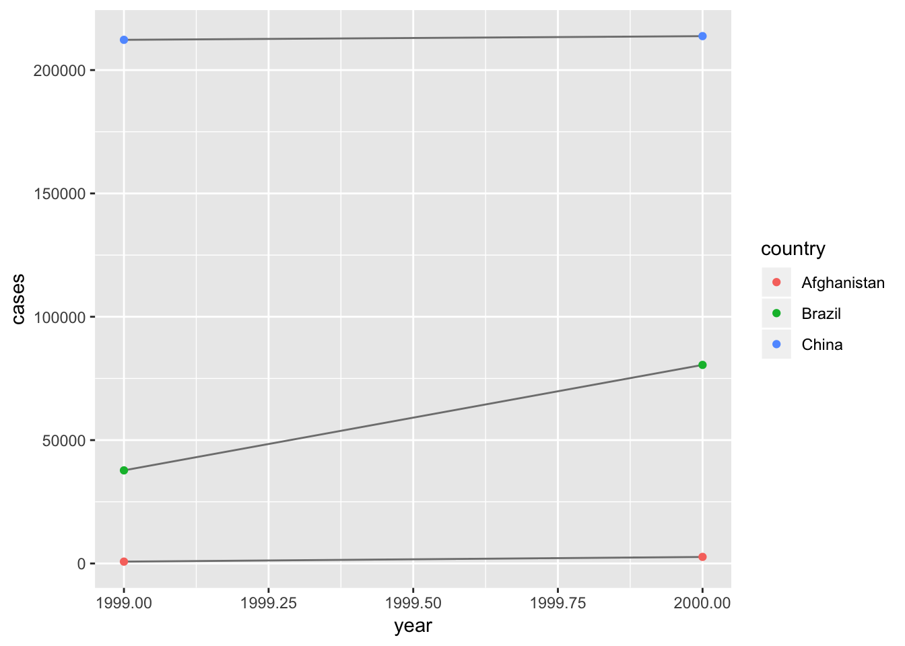
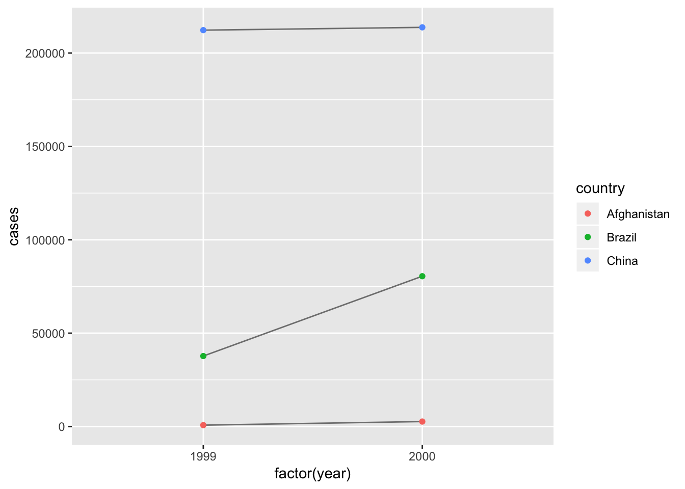

Chapter 4 Tidy data
4.1 Exercises 12.2.1
- Using prose, describe how the variables and observations are organised in each of the sample tables.
## # A tibble: 6 x 4
## country year cases population
## <chr> <int> <int> <int>
## 1 Afghanistan 1999 745 19987071
## 2 Afghanistan 2000 2666 20595360
## 3 Brazil 1999 37737 172006362
## 4 Brazil 2000 80488 174504898
## 5 China 1999 212258 1272915272
## 6 China 2000 213766 1280428583## # A tibble: 12 x 4
## country year type count
## <chr> <int> <chr> <int>
## 1 Afghanistan 1999 cases 745
## 2 Afghanistan 1999 population 19987071
## 3 Afghanistan 2000 cases 2666
## 4 Afghanistan 2000 population 20595360
## 5 Brazil 1999 cases 37737
## 6 Brazil 1999 population 172006362
## 7 Brazil 2000 cases 80488
## 8 Brazil 2000 population 174504898
## 9 China 1999 cases 212258
## 10 China 1999 population 1272915272
## 11 China 2000 cases 213766
## 12 China 2000 population 1280428583## # A tibble: 6 x 3
## country year rate
## * <chr> <int> <chr>
## 1 Afghanistan 1999 745/19987071
## 2 Afghanistan 2000 2666/20595360
## 3 Brazil 1999 37737/172006362
## 4 Brazil 2000 80488/174504898
## 5 China 1999 212258/1272915272
## 6 China 2000 213766/1280428583## # A tibble: 3 x 3
## country `1999` `2000`
## * <chr> <int> <int>
## 1 Afghanistan 745 2666
## 2 Brazil 37737 80488
## 3 China 212258 213766## # A tibble: 6 x 4
## country century year rate
## * <chr> <chr> <chr> <chr>
## 1 Afghanistan 19 99 745/19987071
## 2 Afghanistan 20 00 2666/20595360
## 3 Brazil 19 99 37737/172006362
## 4 Brazil 20 00 80488/174504898
## 5 China 19 99 212258/1272915272
## 6 China 20 00 213766/1280428583- Compute the rate for table2, and table4a + table4b. You will need to perform four operations:
Extract the number of TB cases per country per year.
t2_cases <- table2 %>% filter(type == "cases") %>% select(-type) %>% rename(cases = count )
t4_cases <- table4a %>% gather(`1999`, `2000`, key = "year", value = "cases")Extract the matching population per country per year.
t2_pop <- table2 %>% filter(type == "population") %>% select(-type) %>% rename(population = count )
t4_pop <- table4b %>% gather(`1999`, `2000`, key = "year", value = "population")Divide cases by population, and multiply by 10000.
t2_rate <- t2_cases %>% inner_join(t2_pop, by = c("country", "year")) %>% mutate(count = (cases / population) * 10000) %>% select(-cases, -population) %>% mutate(type = "rate") %>% select(country, year, type, count)
t4_rate <- t4_cases %>% inner_join(t4_pop, by = c("country", "year")) %>% mutate(count = (cases / population) * 10000) %>% select(-cases, -population) %>% mutate(type = "rate") %>% select(country, year, count)Store back in the appropriate place.
table2_new <- bind_rows(table2 %>% mutate(count = as.numeric(count)), t2_rate)
table4c <- t4_rate %>% spread(year, count)Which representation is easiest to work with? Which is hardest? Why?
- Recreate the plot showing change in cases over time using table2 instead of table1. What do you need to do first?
## # A tibble: 6 x 5
## country year cases population rate
## <chr> <int> <int> <int> <dbl>
## 1 Afghanistan 1999 745 19987071 0.373
## 2 Afghanistan 2000 2666 20595360 1.29
## 3 Brazil 1999 37737 172006362 2.19
## 4 Brazil 2000 80488 174504898 4.61
## 5 China 1999 212258 1272915272 1.67
## 6 China 2000 213766 1280428583 1.67table2_s <- table2_new %>% spread(type, count) %>% mutate(cases = as.integer(cases), population = as.integer(population))
table1 %>%
count(year, wt = cases)## # A tibble: 2 x 2
## year n
## <int> <int>
## 1 1999 250740
## 2 2000 296920## # A tibble: 2 x 2
## year n
## <int> <int>
## 1 1999 250740
## 2 2000 296920library(ggplot2)
ggplot(table1, aes(year, cases)) +
geom_line(aes(group = country), colour = "grey50") +
geom_point(aes(colour = country))
ggplot(table2_s, aes(factor(year), cases)) +
geom_line(aes(group = country), colour = "grey50") +
geom_point(aes(colour = country))
4.2 Exercises 12.3.3
- Why are gather() and spread() not perfectly symmetrical? Carefully consider the following example:
stocks <- tibble(
year = c(2015, 2015, 2016, 2016),
half = c( 1, 2, 1, 2),
return = c(1.88, 0.59, 0.92, 0.17)
)
stocks %>%
spread(year, return) %>%
gather("year", "return", `2015`:`2016`)## # A tibble: 4 x 3
## half year return
## <dbl> <chr> <dbl>
## 1 1 2015 1.88
## 2 2 2015 0.59
## 3 1 2016 0.92
## 4 2 2016 0.17(Hint: look at the variable types and think about column names.)
Both spread() and gather() have a convert argument. What does it do?
Why does this code fail?
## # A tibble: 6 x 3
## country year cases
## <chr> <chr> <int>
## 1 Afghanistan 1999 745
## 2 Brazil 1999 37737
## 3 China 1999 212258
## 4 Afghanistan 2000 2666
## 5 Brazil 2000 80488
## 6 China 2000 213766- Why does spreading this tibble fail? How could you add a new column to fix the problem?
Phillip Woods has two record for his age (45 and 50).
people <- tribble(
~name, ~key, ~value,
#-----------------|--------|------
"Phillip Woods", "age", 45,
"Phillip Woods", "height", 186,
"Phillip Woods", "age", 50,
"Jessica Cordero", "age", 37,
"Jessica Cordero", "height", 156
)
people %>%
mutate(id = c(1, 2, 2, 3, 3)) %>%
select(id, everything()) %>%
spread(key, value)## # A tibble: 3 x 4
## id name age height
## <dbl> <chr> <dbl> <dbl>
## 1 1 Phillip Woods 45 NA
## 2 2 Phillip Woods 50 186
## 3 3 Jessica Cordero 37 156- Tidy the simple tibble below. Do you need to spread or gather it? What are the variables?
preg <- tribble(
~pregnant, ~male, ~female,
"yes", NA, 10,
"no", 20, 12
)
preg %>%
gather(`male`, `female`, key = "sex", value = "count")## # A tibble: 4 x 3
## pregnant sex count
## <chr> <chr> <dbl>
## 1 yes male NA
## 2 no male 20
## 3 yes female 10
## 4 no female 124.3 Exercises 12.4.3
What do the extra and fill arguments do in separate()? Experiment with the various options for the following two toy datasets.
tibble(x = c(“a,b,c”, “d,e,f,g”, “h,i,j”)) %>% separate(x, c(“one”, “two”, “three”))
tibble(x = c(“a,b,c”, “d,e”, “f,g,i”)) %>% separate(x, c(“one”, “two”, “three”)) Both unite() and separate() have a remove argument. What does it do? Why would you set it to FALSE?
Compare and contrast separate() and extract(). Why are there three variations of separation (by position, by separator, and with groups), but only one unite?